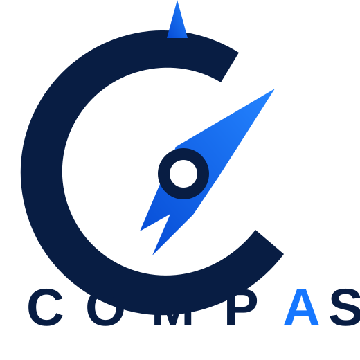

01
One view. The whole picture.
Bring campaign, channel, funnel and revenue signals into one calm operating view. Less tab-hopping. More context.
PaidOrganicSocialCRMRevenue

Get a growth audit ↗Compas connects your marketing signals, turns messy numbers into a clear story, and gives your team the confidence to act.
Most dashboards tell you what happened. Compas helps you understand why it happened — and where the next useful move is hiding.
Bring campaign, channel, funnel and revenue signals into one calm operating view. Less tab-hopping. More context.
Find changes, leaks and opportunities before they become expensive surprises.
Translate performance data into practical next steps your team can actually execute.
Compas is designed to make analytics feel less like reporting and more like having a clear conversation with your numbers.
Bring together the marketing and business signals that matter.
See the relationships, changes and patterns behind the metrics.
Know where attention, budget and effort can create the most impact.
Measure the move, learn quickly, and keep improving the system.
Compas puts the important questions before the spreadsheet: What changed? Why? What matters now? What should we test next?
Talk to Compas →Compas is designed for business owners, marketing teams and growing companies that want a clearer view of what is driving demand and where to focus next.
No. The experience is built to make marketing analytics approachable, with a strong emphasis on useful signals and decision-making rather than technical complexity.
You’ll share a few details about your business and goals through the short intake form. That gives the Compas team the context needed to understand your starting point.
Tell us where your business is today. We’ll start with the questions that matter.
Get your Compas growth audit ↗ No pressure. Just a clearer starting point.